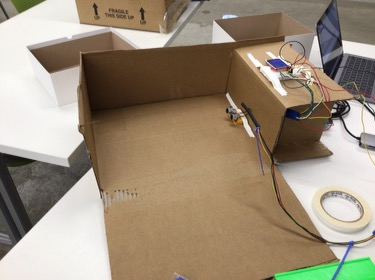

<br>
#### Process: Updates on final project
##Week 5 Update /Midterm
In addition to week 5 assignment, we were advised to pre-plan our final project and state the bill of materials, timeline and project plan. I honestly didn't have a clue of what I wanted to create. So I spent the last couple of weeks and this week brainstorming and trying to figure out what I want to create.
##Timeline
<h2>Week 6</h2>
<div class="container">
<div class="row">
<div class="col-4">
<p>My week 6 goal for my final project was to try to find a way to get a sign of some source that could be measured. In class this week we use copper for capacitive sensing. So I thought it would be a good idea to use copper and capacitive for my final project.
The material I use included:
<ul>
<li>Arduino board </li>
<li>Cardboard </li>
<li>Tape Measure </li>
<li>Breadboard Full size </li>
<li>2 Small Breadboard </li>
<li>Adafruit RGB display </li>
<li>Ultrasonic sensor - HC-SR04 </li>
<li>Tape </li>
<li>Copper </li>
<li>Wood </li>
</ul> </p>
</div>
<div class="col-8 text-center">

</div>
</div>
</div>
<h2>Week 9</h2>
My Week 9 goal was to start building a prototype of my final project and figure out how or what Sensores I was going to be using.
<h2>week 10</h2>
My week 10 & 11 goal was to get all my sensores working together.
<h2>Week 11-14</h2>
My week 11-14 goal is to be finished with building my prototype so that I could focus on just designing the layout of the final product.
In week 14, I was fixing my code up and making sure I had all the material I needed to rebuild my final project.
In week 15, I was just making sure everything worked right and adding the final touches.
<h2>Week 6 Result</h2>
I quickly learned that it wouldn't work because I would be using a lot of copper and that copper is not the best material to keep stepping on or even just using. Below are pictures of how I would have placed the copper on some hard plastic or cardboard.
<h2>Week 9 Result</h2>
I also was able to figure out what sensores I will be using. I decided to use an Ultrasonic Sensor.
<h2>Week 10-15 Result</h2>
Here is my code down below.
<div class="text-sm bg-light" style="height: 500px; overflow-y: auto;border-style: solid;">
<p><pre><code class="language-html">#include <Servo.h>
#include <Servo.h>
}
void loop()
{
sweeper1.Update();
motor1.Update();
led1.Update();
}
</code></pre></p>
</div>
<div class="row">
<!-- <div class="col-4">
<p><img src="band.gif" alt="this band moves" width="250" />
</ul> </p>
</div> -->
<div class="col text-center">
<img class="mx-auto d-block" src="band.gif" alt="this band moves" style="width:400px;height:500px;">
</div>
</div>
</div>
I had to first learn how to us an Arduino board in order to be able to program it. I was able to quickly learn how to program it with the help of the website listed below.
<ul>
<li> <a href="https://www.eitkw.com/wp-content/uploads/2020/03/Arduino_Projects_Book.pdf"> Arduino Projects Book </a></li>
<li><a href="https://www.youtube.com/watch?v=fJWR7dBuc18"> Arduino Tutorial 1 </a></li>
<li><a href="https://nathanmelenbrink.github.io/ps70/04_arduino/index.html "> Microcontroller Programming </a></li>
</ul>
<p>I thought it would be a good idea to sketch out the circuit on my iPad because I wasn't sure where to begin. I originally intended to complete my project with just an Arduino and a motor, but I felt that would be boring. So, to add some pizzazz, I added an LED and other nice components to my circuit to get more practice utilizing them. </p>
<h2>Picture of circuit</h2>
<div class="container">
<div class="row">
<div class="col-4">
<p>This was my first time using different elements to program a motor to run by itself. By drawing the circuit, I was able to see what material I would need to program my marching machine. I felt more confident that I could make it work!
The material I use included:
<ul>
<li>Arduino board </li>
<li>Led </li>
<li>1 100hz Resistor </li>
<li>Micro Sero </li>
<li>L9110 </li>
<li>Motor </li>
<li>Cable cords </li>
</ul> </p>
</div>
<div class="col-8 text-center">
<img class="mx-auto d-block" src="wk5cir.png" alt="Image of circuit" style="width:400px;height:500px;">
</div>
</div>
</div>
##"The Marching Machine Circuit"
By Shekinah Newson
<video width="500px" height="500px" controls>
<source src="week5vid.mp4" type="video/mp4">
</video>